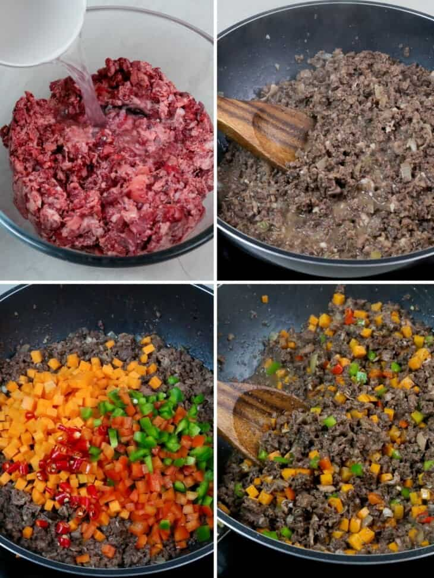

DINAKDAKAN

Dinakdakan is an Ilocano delicacy made with grilled pork parts tossed in a calamansi dressing with onions and chili peppers. It’s delicious enjoyed as an appetizer with your favorite drinks or as a main dish with steamed rice.
What is Dinakdakan
Dinakdakan or warek-warek is an Ilocano delicacy made with grilled pork parts such as the face, ears, liver, and tongue. It’s traditionally served as a bar chow or pulutan to go with ice-cold beer but has evolved over the years into a hearty main dish enjoyed with piping-hot steamed rice.
Similar to the Kapampangan sisig, the meat is first simmered in aromatics until tender, charred over hot coals, and cut into bite-sized strips before tossing in tangy calamansi or vinegar dressing with minced ginger, red onions, and chili peppers.
What sets this Ilocano delicacy apart from sisig is the addition of pig brain. It’s simmered until cooked, mashed until smooth, and then stirred in as a final touch to add creaminess.
Instructions
- In a bowl, combine minced pork lung (or bopis mix), vinegar, and salt. Marinate for about 10 minutes.
- In a wide skillet over medium heat, heat oil. Add onions and garlic and cook until softened.
- Add fish sauce.
- Add minced pork lungs and bring to a boil. Cook, stirring occasionally, for about 20 to 30 minutes or until liquid is mostly absorbed and meat begins to sizzle.
- Add carrots, bell peppers, and chili peppers. Continue to cook for about 2 to 3 minutes or until vegetables are tender-crisp.

How to store
To store, transfer to a container with a lid and refrigerate for up to 3 days. Check for quality as the dish can go bad quicker than most foods. Cooking the meat twice and chopping it into small pieces can increase the risk for spoilage due to swings in food temperature and possible contamination from handling.
Ingredients
- 2 pounds pork face snout, ears
- water
- 2 bay leaves
- 2 tablespoons canola oil
- 2 tablespoons salt
- 1 teaspoon pepper corns
- 1/2 pound pork liver
- 8 ounces pig brain
- 1/4 cup cup calamansi juice
- 1 red onion (peeled and sliced thinly)
- 1 thumb-size ginger (peeled and minced)
- 3 Thai chili peppers (stemmed and minced)
- salt and pepper to taste
Instructions
- In a pot over medium heat, combine pork face, salt, peppercorns, bay leaves, and enough water to cover. Bring to a boil, skimming scum that accumulates on top.
- Lower heat, cover, and simmer for about 45 minutes to 1 hour or until meat is tender but not falling apart. With a slotted spoon, remove meat and drain well.
- Add liver to the pot and cook for about 3 to 5 minutes or until half-done. Remove from pan and drain well.
- Add pig brain to pot and cook for about 8 to 10 minutes. With a slotted spoon, remove brain and transfer into a bowl. With a fork, mash until smooth. Set aside.
- Over hot coals, grill pork for about 4 to 6 minutes on each side or until crisp and slightly charred. Allow to cool to touch and slice thinly
- Grill liver for about 3 to 5 minutes until nicely charred and fully cooked.
- In a large bowl, combine pork meat, onions, ginger, and chili peppers.
- Add calamansi juice and toss to combine.
- Add mashed pig brain and stir until well-distributed. Season with salt and pepper to taste.